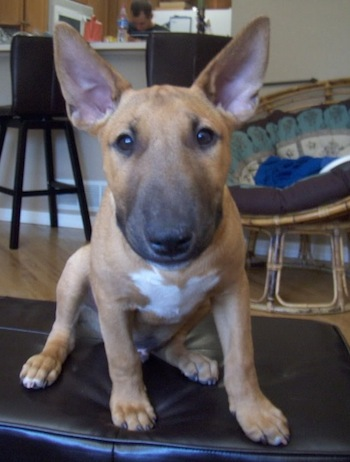

Mural - Encontre aqui cães desaparecidos
BEAGLE, desapareceu de casa a 2 dias, Por favor ajudem. Ele
precisa de medicamentos contínuos ele é Cardíaco. Desapareceu
prox. Metrô Paulista. Atende pelo nome de Toby.... Entrar em
contato com 7777-7777 - Rose

BULL- Cachorro encontrado na Lapa - SP, muito dócil, estava
muito assustado. Contato com Fábio - 8888-9999

COLLIE- Perdi um cão dia 28 na rua Julia Rica as 17:00h, ele esta
na minha família ha 4 onze anos. Obrigado ! Contato com Luis -
7788-9999

Atendimento: atendimento@desaparecidos.com -
(0XX) 99999-9999 / (0XX) 88888-8888